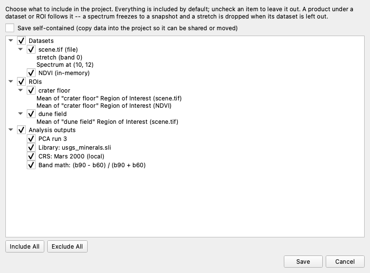
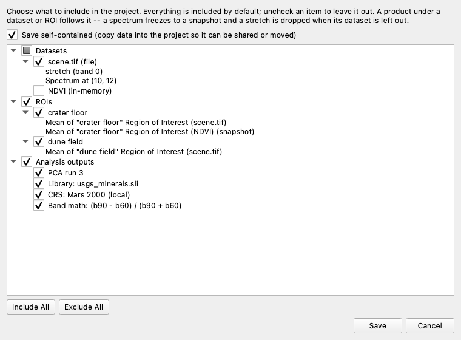

Saving and Opening Projects#
A project saves your WISER session to a single .wiserproj file, so you can
close WISER and pick up where you left off — with the same datasets open, the same
ROIs drawn, the same spectra collected, and the same analysis results.
A project is not a copy of your imagery. By default it points at the data files you opened, which keeps the project small; if you want a project you can move, archive, or send to a colleague, save it self-contained so the data travels with it. Both options are described below.
What a project saves#
The datasets you have open
Regions of Interest
Collected spectra, including the active one
Contrast stretches applied to each band
Band math expressions you have saved
Analysis runs — PCA, MNF, K-Means, and Linear Unmixing
Spectral libraries you have imported
Custom coordinate systems you have created
Saving a project#
Choose File ▸ Save Project As…. WISER first asks what to include, then where to save it.
{kind=link}

Everything in your session is included by default. Uncheck anything you want to leave out. The tree has three groups:
Datasets — every dataset you have open, whether it came from a file or was produced in WISER (a band math result, for instance)
ROIs — every region you have drawn
Analysis outputs — analysis runs, spectral libraries, custom coordinate systems, and saved band math expressions
Checking or unchecking a group toggles everything in it; if you then uncheck a few individual items, the group shows a partial check. Include All and Exclude All reset the whole tree. A group with nothing in it is greyed out.
Products follow the dataset or ROI they came from#
The items indented beneath a dataset or an ROI are the things derived from it — a contrast stretch, a spectrum you picked off the image, an ROI’s average spectrum. They have no checkbox of their own, because they follow whatever you decide about the dataset or ROI above them.
When you uncheck a dataset or ROI, WISER annotates each of those products with what will happen to it:
(snapshot) — the item is saved, but only as values. An ROI-average spectrum whose dataset was left out still plots exactly as it does now, but WISER can no longer recompute it from the image.
(dropped) — the item cannot exist without what it came from, and is left out. A contrast stretch is meaningless without its dataset, for example.
{kind=link}

Above, the NDVI dataset has been unchecked. Notice that its consequence appears
under ROIs as well: the crater floor’s average spectrum was computed on NDVI,
so it is marked (snapshot). Where one ROI has been averaged over more than one
dataset, each average names the dataset it came from, so you can tell them apart.
Referenced or self-contained#
The Save self-contained checkbox decides whether your imagery is copied into the project:
Referenced (default) |
Self-contained |
|
|---|---|---|
Data files |
Recorded by their location on disk |
Copied into the project file |
Project size |
Small |
As large as the data it holds |
Moving or renaming the source data |
Breaks the project |
No effect |
Sending the project to someone else |
They cannot open the data |
Works |
Leave it unchecked for day-to-day work on your own machine — the project stays small, and it reopens against the files already on your disk. Check it when you want the project to stand on its own: to archive it, move it to another machine, or share it with a colleague.
Datasets that only exist inside WISER — a band math result, a PCA output — have no file on disk to point at, so they are always stored inside the project either way.
While the project is being written#
Writing a project is quick when the data is only referenced, but a self-contained save copies and compresses every image into the project file, which can take a while for a large scene. WISER shows a progress dialog while it works and leaves the main window disabled until it finishes, so the save cannot be disturbed halfway through. Progress is also mirrored in the Activity Monitor.
You can cancel from that dialog. Cancelling means nothing happened: WISER builds the new project alongside the destination and only puts it in place once it is complete, so a cancelled save — like one interrupted by a crash or a full disk — leaves any project already saved at that location exactly as it was.
Saving again#
File ▸ Save Project re-saves to the same file, keeping the same selection and the same referenced/self-contained choice you made the first time. Use Save Project As… when you want to change what is included, change the mode, or write a second project file.
Tip
Because Save Project As lets you deselect anything, you can explore freely in one session and then split the results into several focused projects — one holding the NDVI work, another holding a classification — each saved from the same session with a different selection.
Opening a project#
Choose File ▸ Open Project…. Opening a project replaces your current session, so WISER asks you to confirm first — save your work beforehand if you need it.
A self-contained project has to be unpacked before it can be opened, which takes a moment for a large one, so WISER shows the same progress dialog it shows when saving. You can cancel it: your current session is only replaced once the project has been unpacked successfully, so cancelling an open leaves the session you already had exactly as it was, rather than half-replaced.
If anything in the project cannot be restored, WISER still opens it and tells you what was left out. The usual cause is a referenced data file that has since been moved, renamed, or deleted; a self-contained project is immune to this, since it carries its data with it.
Once a project is open, Save Project writes it back with everything it now holds, in the same mode it was saved in.
Version compatibility#
A project written by any released version of WISER can be opened by every later version. The reverse is not true: if you try to open a project created by a newer version of WISER than the one you are running, WISER tells you to upgrade rather than opening it and misreading it.